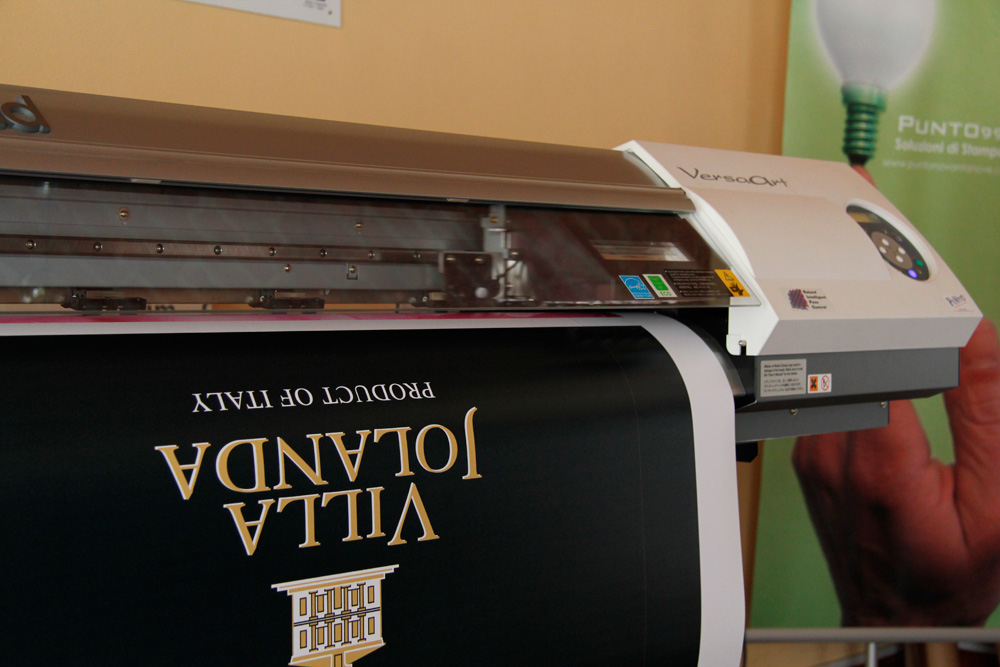
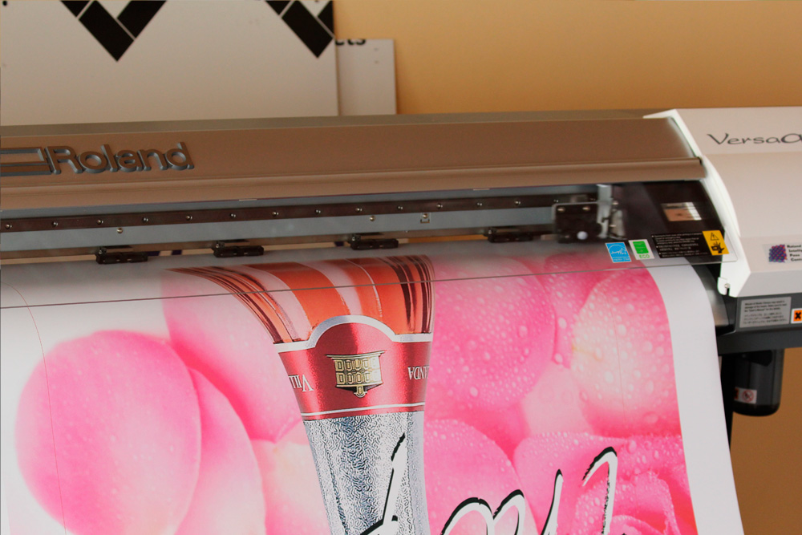
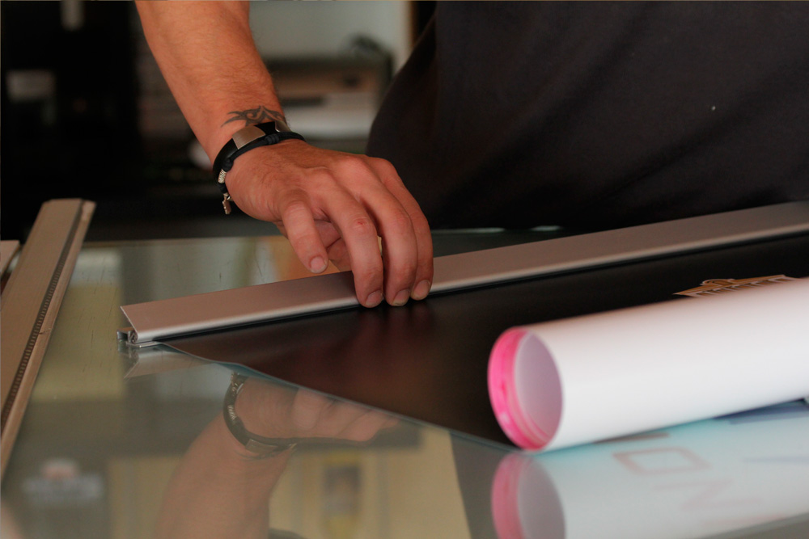
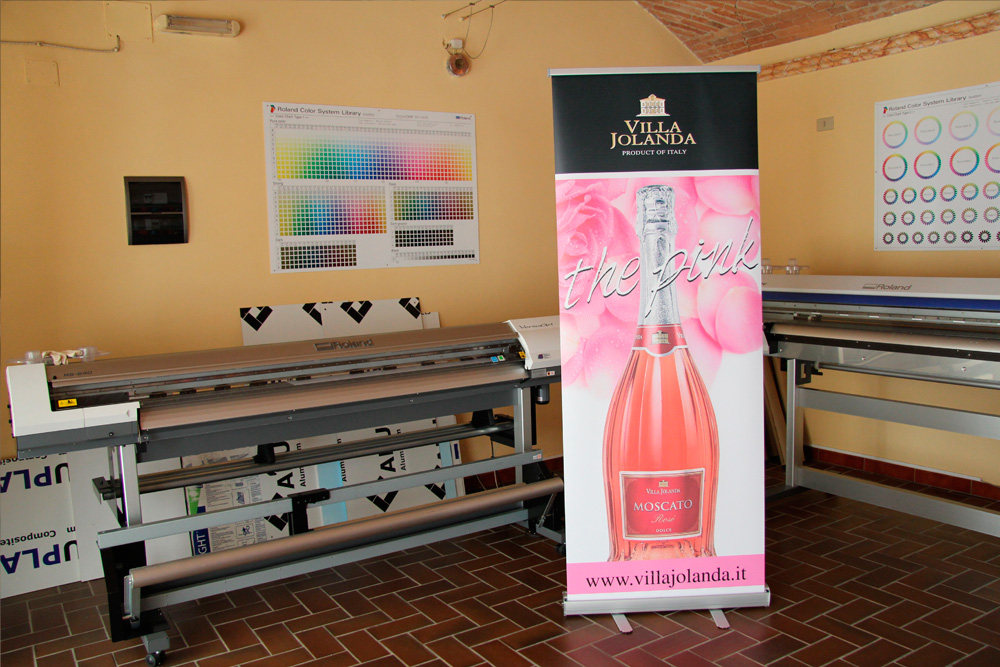

<div class="container imgstriscioni">
    <div class="row">
        <div class="col-12 col-md-6">
            <div class="jumbotron my-2">

                <p class="text-justify">
                    <strong>Punto99</strong> in grado di stampare su <strong>PVC</strong> per: <strong>striscioni</strong> da <strong>esterno</strong>, striscioni da <strong>interno</strong>, in <strong>piccolo formato e grande formato</strong> con possibilità di <strong>occhiellatura</strong> e <strong>saldatura</strong>.
                </p>
            </div>
        </div>

        <div class="mx-auto hidden">
            <a href="images/striscione1.jpg" data-lightbox=gallery>
               
            </a>

            <a href="images/striscione2.jpg" data-lightbox=gallery>
               
            </a>
            <a href="images/striscione3.jpg" data-lightbox=gallery>
               
            </a>
            <a href="images/striscione4.jpg" data-lightbox=gallery>
               
            </a>


        </div>

    </div>
</div>
